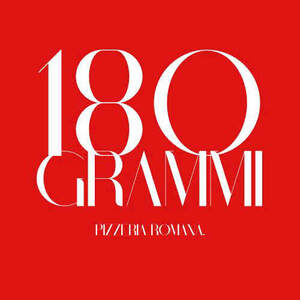
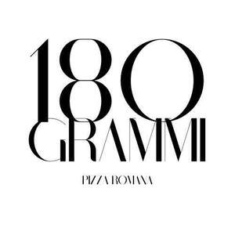

Trade Mark Journal No.2025/041 10 October 2025
UK00004270055 26 September 2025 (30,43)
Mark 1

Mark 2

- Class 30
- Pizza; Pizza pies; Pizza crusts; Pizza crust; Pizzas; Pizza sauce; Pizza dough; Pizza sauces; Gluten-free pizza; Frozen pizza; Pizza flour; Frozen pizza crusts; Fresh pizza; Pizza spices; Pizza bases; Pizza mixes; Frozen pizza crusts made of cauliflower; Uncooked pizzas; Frozen pizzas; Pizza dough mix; Sauces for pizzas; Chilled pizzas; Pre-baked pizzas crusts; Prepared pizza meals; Calzones; Fresh pizzas; Hamburger sandwiches; Lasagna; Cheeseburgers [sandwiches]; Pizzas [prepared]; Breadsticks; Pasta for incorporating into pizzas; Preserved pizzas; Pasta salad; Pasta; Pie crusts; Kebab sauce; Toasted cheese sandwich; Pasta sauce; Chicken sandwiches; Chicken pies; Truffle pasta; Sandwiches; Sandwich wraps [bread]; Frankfurter sandwiches; Nachos; Sushi; Taco sauce; Meat pies; Pies (Meat -); Toasted cheese sandwich with ham; Prepared meals in the form of pizzas; Preparations for making pizza bases; Hamburgers in buns; Soda bread; Cream pies; Chocolate for toppings; Ice cream sandwiches; Sopapillas [fried bread]; Sauces for use with pasta; Sauces for pasta; Pasta sauces; Hamburgers contained in bread buns; Pies; Hamburgers being cooked and contained in a bread roll; Lasagne; Taco chips; Naan bread; Macaroni salad; Spaghetti and meatballs; Spaghetti with meatballs; Hamburgers contained in bread rolls; Pasta dishes; Burgers contained in bread rolls; Hot dog sandwiches; Wholemeal pasta; Hot sausage and ketchup in cut open bread rolls; Pita bread; Stuffed pasta; Cheese sauce; Turkey sandwiches; Frozen yogurt pies; Sandwiches containing hamburgers; Burritos; Ravioli; Fish sandwiches; Vegetable pies; Macaroni with cheese; Macaroni cheese; Chickpea pasta; Frozen brownie dough; Pesto [sauce]; Toasted sandwiches; Fried dough cookies; Gluten-free bread; Salad cream; Ziti; Ice-cream cakes; Spaghetti sauce; Blueberry pies; Lomper [potato-based flatbread]; Canned spaghetti in tomato sauce; Fresh pasta; Pork pies; Pumpkin pies; Preparations for making up into sauces; Bakery goods; Tiramisu; Viennese pastries; Chocolate fillings for bakery products; Barbecue sauce; Glucose for food; Molasses for food; Fructose for food; Starch for food; Syrup for food; Mustard for food; Glucose preparations for food; Maltose for food; Glutamate for food; Wafers [food]; Cereal-based snack food; Snack food (Cereal-based -); Honey [for food]; Food seasonings; Natural starches for food; Flour for food; Oat-based food; Food flavourings; Glucose powder for food; Turmeric for food; Rice-based snack food; Snack food (Rice-based -); Toasted bread; Toast; Toasted grain flour; Corn kernels being toasted; Toasted corn kernels; Steamed bread; Multigrain bread; French toast; Toasts; Frozen French toast; Toasts [biscuits]; Croutons; Roasted barley tea; Rye bread; Bread buns; Bread and buns; Meal; Gluten-free bakery products; Pastries; Mixes for making bakery products; Macaroons [pastry]; Chocolate for confectionery and bread; Pastry; Preparations for making bakery products; Danish pastries; Dairy confectionery; Chocolate pastries; Flour confectionery; Pastries, cakes, tarts and biscuits (cookies); Frozen pastries; Confectionery; Almond pastries; Savory pastries; Frozen pastry; Breads; Confectionery chips for baking; Vegan cakes; Frozen dairy confections; Prepared desserts [pastries]; Confectionery bars; Chocolate confectionary; Croissants; Pâté [pastries]; Pastries with fruit; Fruit pastries; Prepared desserts [confectionery]; Pastry dough; Cake doughs; Fondants [confectionery]; Custards [baked desserts]; Cakes; Danish bread; Dough for cakes; Almond confectionery; Frozen confectionery; Truffles [confectionery]; Chocolate confectionery; Chocolate confectionery products; Confectionery chocolate products; Flour for doughnuts; Bread doughs; Pastry mixes; Snack food products made from rusk flour; Viennoiserie; Chocolate cakes; Fruit filled pastry products; Sesame confectionery; Danish bread rolls; Non-medicated flour confectionery; Custard-based fillings for cakes and pies; Muesli desserts; Fruit confectionery; Breakfast cake; Potato flour confectionery; Bread biscuits; Cake flour; Pre-baked bread; Chocolate-based fillings for cakes and pies; Shortcrust pastry; Malt cakes; Baguettes; Ready-to-bake dough products; Cream cakes; Brioches; Frozen cakes; Chocolate confections; Frozen yogurt cakes; Fruit breads; Confectionery ices; Cocoa-based ingredients for confectionery products; Cupcakes; Long-life pastry; Bread; Cake dough; Doughnuts; Cheesecakes; Barm cakes.
- Class 43
- Pizza parlors; Sushi restaurant services; Take-out restaurant services; Salad bars [restaurant services]; Serving food and drink in doughnut shops; Ramen restaurant services; Fast-food restaurant services; Take away food services; Take away food and drink services; Dog day care services; Delicatessens [restaurants]; Bar and restaurant services; Restaurant and bar services; Take-away restaurant services; Carry-out restaurants; Grill restaurants; Restaurants; Carvery restaurant services; Restaurant services; Catering in fast-food cafeterias; Hotel restaurant services; Restaurants (Self-service -); Self-service restaurants; Self-service restaurant services; Tempura restaurant services; Udon and soba restaurant services; Spanish restaurant services; Washoku restaurant services; Mobile restaurant services; Eateries; Japanese restaurant services; Fast food restaurants; Restaurant reservation services; Tourist restaurants; Serving food and drink in restaurants and bars; Bistro services; Reservation of restaurants; Cafe services; Providing food and drink in doughnut shops; Providing food and drink in restaurants and bars; Restaurant services for the provision of fast food; Restaurant services incorporating licensed bar facilities; Serving food and drink for guests in restaurants; Providing restaurant services; Serving food and drink in Internet cafes; Café services; Providing food and drink for guests in restaurants; Cafés; Booking of restaurant seats; Coffee shops; Beer bar services; Providing food and drink in bistros; Providing food and drink in Internet cafes; Provision of food and drink in restaurants; Tapas bars; Restaurant services provided by hotels; Snack-bar services; Hookah bar services; Providing reviews of restaurants and bars; Catering services for company cafeterias; Coffee shop services; Snack bar services; Take-away fast food services; Guesthouse; Brasserie services; Restaurant information services; Providing food and drink; Providing of food and drink; Preparation of food and drink; Food and drink catering; Catering of food and drink; Catering (Food and drink -); Preparation of food and beverages; Food preparation; Catering of food and drinks; Providing food and beverages; Take-away food and drink services; Takeaway food and drink services; Serving food and drinks; Services for the preparation of food and drink; Food and drink preparation services; Take-away food services; Providing of food and drink via a mobile truck; Takeaway food services; Preparation of Spanish food for immediate consumption; Provision of food and beverages; Provision of food and drink; Hospitality services [food and drink]; Services for providing food and drink; Catering for the provision of food and drink; Food and drink catering for banquets; Food and drink catering for institutions; Bar services; Coffee bar services; Wine bar services; Juice bar services; Bars; Salad bars; Rental of bar equipment; Wine bars; Shisha bars; Juice bars; Bar information services; Cocktail lounge buffets; Cocktail lounges; Cocktail lounge services; Lounge services (Cocktail -); Hotel services; Providing hotel and motel services; Hotel accommodation reservation services; Providing food and drink catering services for exhibition facilities; Corporate hospitality (provision of food and drink); Pet hotel services; Providing room reservation and hotel reservation services; Catering for the provision of food and beverages; Catering services for providing European-style cuisine; Consultancy services in the field of food and drink catering; Providing reviews of restaurants; Catering services for the provision of food and drink; Catering services for providing Japanese cuisine; Club services for the provision of food and drink; Providing food and drink catering services for convention facilities; Rental of dishes; Providing food and drink for guests; Night club services [provision of food]; Hotel room booking services; Providing food and drink catering services for fair and exhibition facilities; Hotel accommodation services; Catering services for providing Spanish cuisine; Private members dining club services; Self-service cafeteria services; Catering; Cafeteria services.
VIVICRI LTD